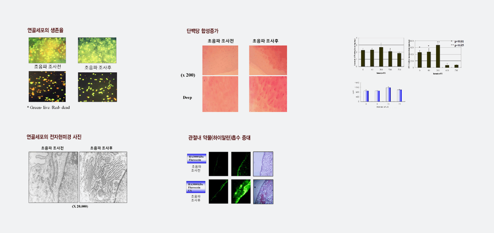

초음파 치료원리 및 효과
초음파를 통한 연골세포 증식
- 초음파는 아주 미세한 기포들(microbubbles)을 생성 시킵니다.
- 수많은 기포들이 연골세포 표면에서 터지면서 충격과 압력을 가합니다.
- 이러한 작용에 의해 세포막의 투과력이 커집니다.
- 연골세포 안으로 이온물질과 단백질의 이동이 원활해 집니다.
- 이러한 물질들의 이동은 세포의 활동을 관장하는 일종의 생체신호로 작용합니다.
- 결과적으로 연골세포의 증식을 통하여 골관절염이 치료됩니다.
관절염 치료
- 연골세포 활성화를 통해 세포를 증식시켜 콜라겐 및 단백당과 같은 기질을 많이 생산하도록 촉진합니다.
- 연골세포의 기질에 의해 보호되기 때문에 기질의 양이 증가함에 따라 연골세포의 증식이 원활해집니다.
- 연골세포가 활성화되기 시작하면 연골이 증식되기 때문에 퇴행성 관절염이 근본적으로 치료되는 것입니다.
반면,퇴행성 관절염이 진행되기 시작하면
연골의 손상으로 연골세포가 보호받지 못하기 때문에 급격히 악화됩니다.
따라서 관절염 증상이 나타나기 전에 연골을 활성화시켜 주는 것이 바람직하며, 무엇보다도 관절염 초기에 치료를 시작하는 것이 중요합니다.